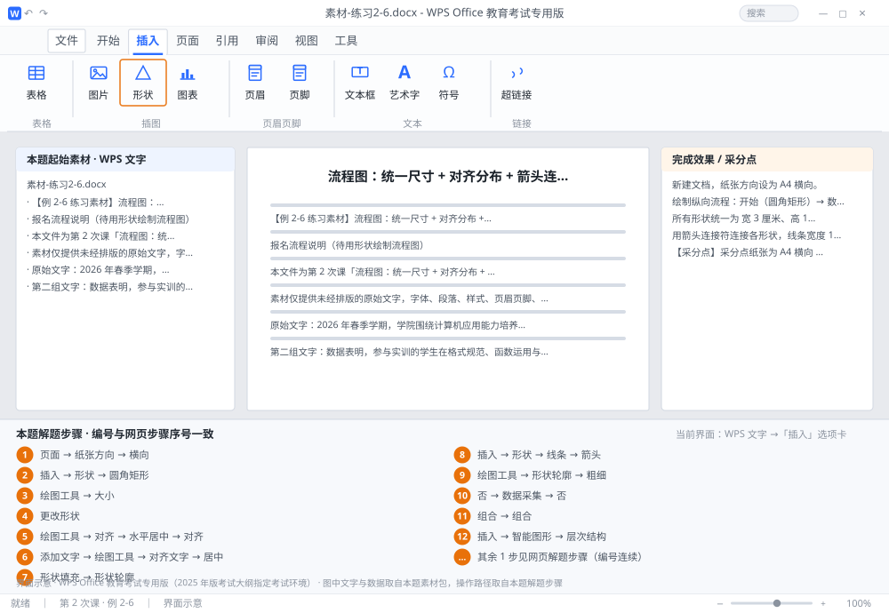

完成比对文档 · 例 2-6
流程图：统一尺寸 + 对齐分布 + 箭头连接符 + 组合 + 智能图形 ｜ 第 2 次课 / WPS 文字 ｜ 网页：实操-文字2.html ｜ 考试环境：WPS Office 教育考试专用版（2025 年版考试大纲指定考试环境）
用途 本页按修订后的题目要求与解题步骤生成，是交卷自查的结果基准：
逐项列出每一步应出现的可复核结果，配合模拟操作截图与解题结果文件使用。
它不是素材包的一部分，不会预置答案动作；起始素材仍从本题素材包下载。
一、本题起始素材包
目录：练习素材/练习2-6-流程图与智能图形/ ｜
下载包：练习素材/下载/练习2-6-流程图与智能图形.zip
二、题目要求
- 新建文档，纸张方向设为 A4 横向。
- 绘制纵向流程：开始（圆角矩形）→ 数据采集（矩形）→ 数据合格？（菱形）→ 建模分析（矩形）→ 结束（圆角矩形）；菱形「否」分支回到「数据采集」。
- 所有形状统一为 宽 3 厘米、高 1.5 厘米；沿页面水平居中，纵向间距均匀。
- 用箭头连接符连接各形状，线条宽度 1.5 磅。
- 形状内文字：宋体小五、水平垂直居中；填充浅蓝、轮廓深蓝 1 磅。
- 将全部形状与连接符组合为一组。
- 在页面下方插入智能图形（层次结构），展示「学院—系—专业」三级结构。
- 保存为 学号-姓名-练习2-6.docx。
三、解题步骤（编号与下方核对表、截图编号一致）
- 改横向。「页面」→「纸张方向」→「横向」。
- 插第一个形状。「插入」→「形状」→ 选「圆角矩形」→ 在页面上拖出一个（先不管大小）。
- 设统一尺寸。选中形状 →「绘图工具」→ 在「大小」组里宽度填 3 厘米、高度填 1.5 厘米 → Enter。
- 复制其余形状。Ctrl+D（或复制粘贴）复制 4 个；选中不需要圆角的那几个 → 右键 →「更改形状」→ 分别改为矩形、菱形。先复制再改形状，尺寸自动保持一致。
- 水平居中并分布。按住 Shift 依次选中 5 个形状 →「绘图工具」→「对齐」→「水平居中」；再「对齐」→「纵向分布」。若间距仍不均匀，用「对齐」→「纵向间距」手动设为 0.8 厘米。
- 写文字。右键形状 →「添加文字」→ 输入内容 → 宋体小五 → 段落居中 + 形状内垂直居中（「绘图工具」→「对齐文字」→「居中」）。
- 上色。选中全部形状 →「形状填充」→ 浅蓝；「形状轮廓」→ 深蓝、粗细 1 磅。
- 连箭头。「插入」→「形状」→ 在「线条」里选「箭头」或「肘形箭头连接符」→ 从上一个形状的连接点（形状边缘出现的小圆点）拖到下一个形状的连接点 → 松开。连对了会「粘」在形状上，移动形状时线自动跟随。
- 设线宽。选中连接符 →「绘图工具」→「形状轮廓」→「粗细」→ 1.5 磅。
- 画「否」分支。用肘形连接符从菱形右侧绕回「数据采集」形状，加文字「否」。
- 组合。Ctrl+A 或按住 Shift 选中全部形状与连接符 → 右键 →「组合」→「组合」。
- 插智能图形。「插入」→「智能图形」→ 选「层次结构」类版式 → 确定 → 在左侧文本窗格输入三级：管理学院 / 大数据管理系 / 大数据管理与应用专业 → 关闭窗格。
- 保存。保存为 学号-姓名-练习2-6.docx。
四、完成效果 / 采分点
采分点纸张为 A4 横向 · 5 个形状尺寸统一 3×1.5 厘米 · 已水平居中且纵向分布均匀 · 连接符为箭头（非直线）且 1.5 磅 · 形状填充浅蓝、轮廓深蓝 1 磅 · 文字宋体小五且居中 · 已组合 · 已插入层次结构智能图形且含三级
五、逐项完成核对表
| 步骤 | 关键操作路径 | 应出现的结果（可复核） |
|---|
| 1 | 改横向 | 「页面」、「纸张方向」、「横向」 |
| 2 | 插第一个形状 | 「插入」、「形状」、「圆角矩形」 |
| 3 | 设统一尺寸 | 「绘图工具」、「大小」、3 厘米、1.5 厘米 |
| 4 | 复制其余形状 | 「更改形状」 |
| 5 | 水平居中并分布 | 「绘图工具」、「对齐」、「水平居中」、「纵向分布」、「纵向间距」 |
| 6 | 写文字 | 「添加文字」、「绘图工具」、「对齐文字」、「居中」 |
| 7 | 上色 | 「形状填充」、「形状轮廓」、1 磅 |
| 8 | 连箭头 | 「插入」、「形状」、「线条」、「箭头」、「肘形箭头连接符」 |
| 9 | 设线宽 | 「绘图工具」、「形状轮廓」、「粗细」、1.5 磅 |
| 10 | 画「否」分支 | 「否」、「数据采集」 |
| 11 | 组合 | 「组合」 |
| 12 | 插智能图形 | 「插入」、「智能图形」、「层次结构」 |
| 13 | 保存 | 学号-姓名-练习2-6.docx |
六、模拟操作截图

界面示意 · WPS Office 教育考试专用版 · 橙色编号与本题解题步骤序号一致；
图中文字与数据取自本题素材包，功能入口取自本题解题步骤。
核对方法：按网页解题步骤完成并另存自己的成稿后，逐行比对本表第 3 列的
参数、公式、区域、文件名与对象数量；再对照网页「完成效果 / 采分点」检查版式是否一致。